3-语法分析
语法分析
语法分析
也叫做 parser，输入是 token
流，<token name,attribute value> 。其中
token name 将会被用来语法分析。输出是
parse tree/AST （用图形化表达 token 流的语法结构）
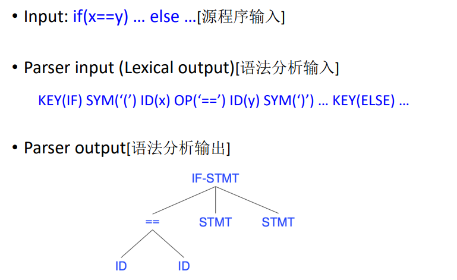
词法分析只能识别成为 token 流，但是不是所有 token 流都是有效的，我们必须在这一部分识别他是否符合我们的语言规范，其中正则表达式不够有效。
比如嵌套结构 \(a^nb^n\)，我们不能用 Regular Language 和有限状态机 FA
因为 FA 不能计数
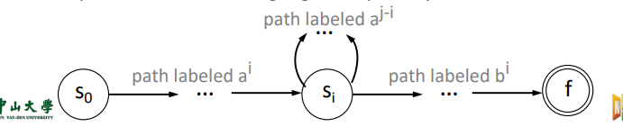
我们将会使用上下文无关语言 CFL（Context Free Language）用来描述嵌套结构
Grammars
基本概念
语言 Language，字符表组成的串的集合
语法 Syntax，描述正确的形式，它由文法指定
文法 Grammar，用来描述语言的语法
语法应该有的要求：正确，完备，便捷
定义文法 四个组成部分 \(\{T,N,s,\delta\}\)
\(T\) 终结符集合
\(N\) 非终结符集合
\(s\) 开始符号，非终结符之一
\(\sigma\) 产生式，\(LHS \rightarrow RHS\) ，左边到右边
上下文无关文法 Context Free Grammar
四个组成部分 \(\{T,N,s,\delta\}\)
\(T\) 终结符集合。比如数字，运算符号，靠前的小写字母
\(N\) 非终结符集合。比如大写字母，小写斜体
\(s\) 开始符号，非终结符之一
\(\sigma\) 产生式，\(A \rightarrow \alpha\) ，A是非终结符，\(\alpha\) 是终结符或者非终结符组成的式子
产生式
\(LHS\rightarrow RHS\) 左边推导（把左边的非终结符替换成 RHS）右边
\(\beta \rightarrow \alpha\) 一步推导
\(\beta \rightarrow ^*\alpha\) 零到多步推导
\(\beta \rightarrow +\alpha\) 一到多步推导
推导
\[S\rightarrow^*\alpha\]
\(\alpha\) 是 G 文法的一个句型（sentential form）
\(\alpha\) 如果只有终结符，那么是G文法的一个句子（sentence）
语言可以被文法产生，\(L(G)=\{w:S\rightarrow ^*w,w\in V_T^*\}\)
文法分类
Type 0 无限制文法
Type 1 上下文有关文法（CSG，Context Sensitive Grammar）
Type 2 上下文无关文法（CFG）
Type 3 正则文法
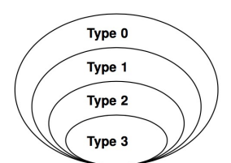
Type 0 Unrestricted Grammar
产生式可以左边长，也可以右边长
可以空推导 \(A\rightarrow \varepsilon\)
隐式的限制：不允许 \(\varepsilon \rightarrow ...\)
Type 1 Context Sensitive Grammar
这里的 A 是非终结符
\(\alpha A \beta \rightarrow \alpha \gamma \beta\) ，只有上下文 \(\alpha\) 和 \(\beta\) 下才可以推导
\(A\rightarrow B\) 上下文无关
隐式限制
LHS必须短过或者等于RHS
RHS不可以是 \(\varepsilon\)
Type 2 Context Free Grammar
\(A\rightarrow \gamma\)
隐式限制
LHS 是一个单独的非终结符
RHS 不能是 \(\varepsilon\)
Type 3 Regular Grammar
\(A\rightarrow \alpha\)，\(A\rightarrow \alpha B\)
其中 A，B是非终结符，\(\alpha\) 是终结符
隐式限制
LHS 是一个非终结符
RHS 是一个终结符或者非终结符跟着一个非终结符
每次推导增加一个长度
实际应用
实际使用 CFG 进行语法分析，虽然编程语言上下文有关，但是一样用 CFG ：CSG 效率不高，大多数都是上下文无关，剩下有关的部分可以交由语义分析来完成。
推导
文法（gammar）用来生成字符串和构造 parser
推导（derivation）是一个序列的规则。从 start symbol 开始，推导出一个句子。
但是怎么推导呢（替换哪个？），需要一个标准
最左推导（Leftmost）：每次替换最左边的非终结符
最右推导（Rightmost）：每次替换最右边的非终结符
分析树 Parse Tree
用图像表示推导
过滤了推导顺序的信息
每个中间节点代表应用了一条产生式
叶子是终结符
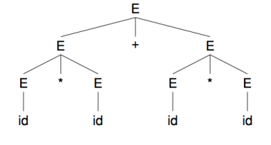
推导和分析树是多对一的关系
最左推导或者最右推导和分析树是一对一关系
应用顺序不影响结构，但是应用哪一条会影响，所以文法必须清晰定义好
二义性
文法二义性：
文法可以用不同的规则来得到相同的字符串
存在一个句子对应多棵树
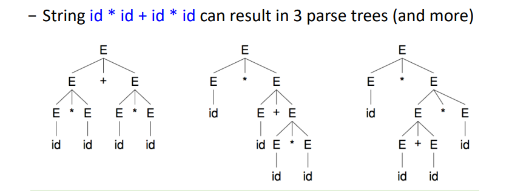
文法最好没有二义性，二义性是文法的特性而不是语言的特性。
二义性不能自动消除，可以重写，也可以继续用但是补上规则选择哪个树
消除二义性
指定优先级：越高层次的产生式，优先级越低
指定结合性：左相关则左递归，右相关则右递归
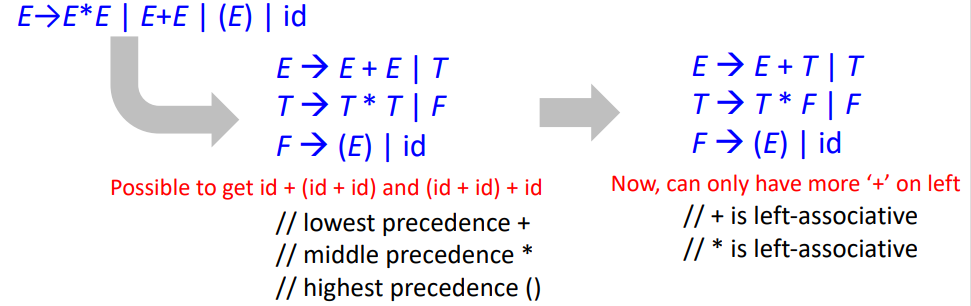
文法（Grammar）到解析器（Parser）
抽象语法树（AST，abstract syntax tree）是语法树的简写，省略了一些对语义不影响的终结符和中间节点可以是终结符
操作符和关键字不会出现在叶子
单个的产生式会被忽略（E->T）
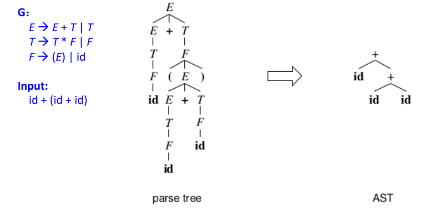
分析器 Parser
文法（Grammar）用来产生字符串或者构建分析器（Parser）
一般有 top-down 和 bottom-up 两种 parser
Top-down
从根开始推导产生到叶子
找到的是最左推导
Bottom-up
从叶子开始构建到根，尝试从字符串归约（reduce）到 start symbol
找到最右推导的逆（最左规约/规范规约）
对比
Top-down 更容易理解，可以手工完成。Antlr
Bottom-up 更强大，可以机器完成。YACC/Bison
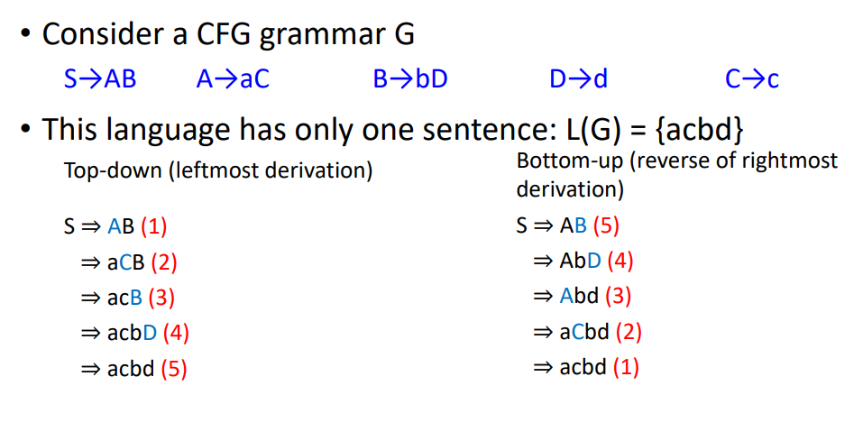
自顶向下分析器（Top-down Parser）
递归下降分析（Recursive descent parser），即不停试错回溯直到找到合适的输出
预测分析（Predictive parser），在递归下降的基础上加上预测，通过观看前面的 k 个字符。但是对语法有限制，只能适用于一种叫 \(LL(k)\) 语法
左递归
Topdown解决不了左递归，句型会无限增长但是不消耗输入。可以改为等价的右递归。
直接左递归
间接左递归 \(A\rightarrow Sd\)，\(S\rightarrow Aa\)
消除左递归
对于文法 \(A\rightarrow A\alpha\ |\ \beta\)，其中 \(\beta\) 不等于 \(\alpha\) ，也不以 \(A\) 开头 可以改为
\(A\rightarrow \beta A'\)
\(A'\rightarrow \alpha A'|\varepsilon\)
预测分析
如果候选产生式首符号唯一，可以预测分析 并非总是可以预测
共同前缀
左递归
重写文法适用来预测分析
消除左递归
提取左公因子，比如将 \(A\rightarrow \alpha \beta\ | \alpha \gamma\) 改写为 \(A\rightarrow \alpha A'\) 和 \(A'\rightarrow \beta | \gamma\)
LL(k) 分析器/文法 /语言
LL（k）解析器
第一个 L 代表从左往右扫描
第二个 L 代表产生最左推导
k 代表往前看 k 个符号
LL（k）文法：可以用LL（k）分析器解读的文法，他是上下文无关文法
LL（k）语言：可以用LL（k）文法表示的语言
LL（k）分析器的实现
递归实现，隐式使用函数栈
非递归实现，使用 stack
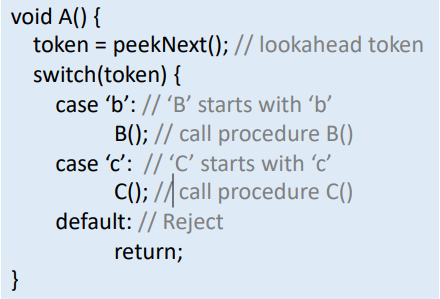
可以使用状态转移表来表示非递归的实现，自动化分析器
LL（1）分析器（非递归）
四部分
输入缓冲 input buffer，用 $ 结束
栈 stack，其中 $ 代表底部
分析表 parse table M【A,b】
分析驱动器 parser driver
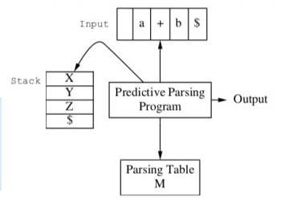
分析表的结构
第一列是非终结符
第一行是终结符
表格项是产生式
<non-terminal,input>
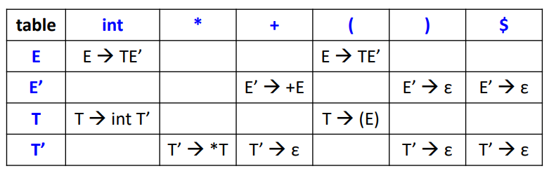
操作步骤
X 是栈顶的元素，a 是 input 的 token
如果 X 是终结符
X==a==$成功并接收X==a!=$pop并推进InputX!=a拒绝输入
如果 X 是非终结符
如果
M[X,a]==X->RHS弹出 X 并放入 RHS（逆序入栈，最左边的在栈顶）如果
M[X,a]==empty，那么拒绝
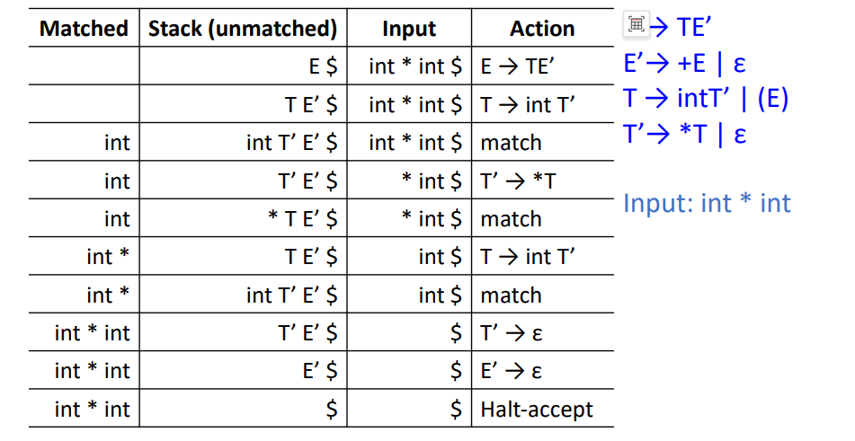
FIRST集和 FOLLOW集
提前定义两个集合
\(FIRST(\alpha)\)：由 \(\alpha\) 推导出来的所有字符串的第一个终结符的集合，如果 \(A\rightarrow *\varepsilon\) 那么 \(\varepsilon \in FIRST(A)\)
\(FOLLOW(A)\) ：A后面可以紧跟的终结符。如果 A 可以是一个句型的最右侧，那么 \(\$\in FOLLOW(A)\)
计算FIRST集合
如果 X 是终结符，那么 FIRST(X)={X}
如果 X 是非终结符
如果 \(X\rightarrow \varepsilon\) ，添加 \(\varepsilon\) 到 FIRST(X)
如果 \(X\rightarrow Y_1Y_2Y_3...Y_k\)，如果前面的能推出空，就添加 \(FIRST(Y_i)-\varepsilon\)；如果全部都能推出空，也加入 \(\varepsilon\)
计算FOLLOW集合
计算一个非终结符 X 的 FOLLOW(X)。不断应用下列规则直至无法添加
如果 X 是开始符号，那么添加 $
如果 \(A\rightarrow \alpha X \beta\) ，那么 \(FIRST(\beta)-\varepsilon \subset FOLLOW(X)\)
如果 \(A\rightarrow \alpha X\) 或者 \(A\rightarrow \alpha X \beta\) 同时 \(FIRST(\beta)\) 包含 \(\varepsilon\) ，那么 \(FOLLOW(A) \subset FOLLOW(X)\)
构建 LL（1）表
目标：把每一个产生式放入表格中 产生式 \(A\rightarrow \alpha\) 满足条件放入表格 M【A，a】满足其一
先考虑RHS的FIRST集合：终结符 a 在 \(FIRST(\alpha)\) 中
同时考虑LHS的FOLLOW集合：\(FIRST(\alpha)\) 有 \(\varepsilon\) 或者 \(\alpha==\varepsilon\) 同时 \(FOLLOW(A)\) 中有 a
没有被填上的表格项写 error
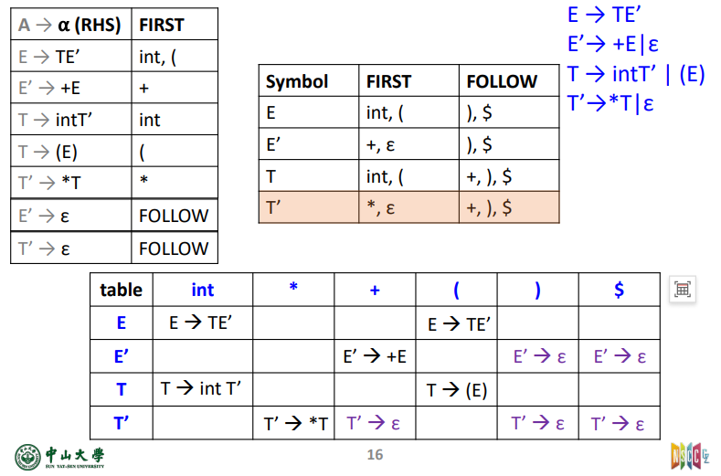
LL（1）文法判断
直观判断：表格每一项最多一条产生式
对于产生式 \(A\rightarrow \alpha | \beta\)，必须要
\(FIRST(\alpha)\cap FIRST(\beta)=\phi\)
最多只有 \(\alpha\) 或者 \(\beta\) 其一能推出 \(\varepsilon\)
如果 \(\beta\) 可以推出 \(\varepsilon\) ，那么 \(FIRST(\alpha) \cap FOLLOW(A)=\phi\)
如何处理非 LL（1）文法
如果它有可能 LL（1）
消除左递归
提取左公因子
尝试移除二义性（优先级，结合性）
如果不是 LL（1）
编程者选择
使用更强大的parser
LL（1）复杂度
线性时间和空间复杂度
LL（1）可以理解为 DFA+Stack ，因此可以计数
LL（0）意味着每个非终结符只有一条规则应用
LL（2）...LL（k）意味着更大的表格，空间花销
自底向上分析器（Bottom-up Parser）
从叶子到根归约（Reduce）成一个start symbol，和 top-down 相反方向
得到最右推导的逆
好处
不需要处理左递归
不需要处理左公因子
可以表示很多语言
效率高
移进，规约
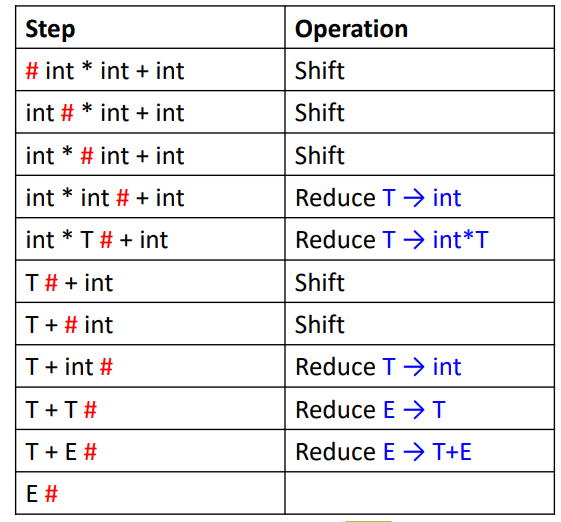
移进归约（Shift-Reduce）
移进（Shift）：将
#向右移归约（Reduce）：左侧串的右端进行归约，比如
ABCx#yz归约称为ABE#yz
左侧的字符串可以用 栈Stack 来存储，产生式逆向使用
关键问题-何时移进和归约
句柄：是一个子串 \(\alpha\)
\(\alpha\) 是一个产生式的RHS，即 \(A\rightarrow \alpha\)
将 \(\alpha\) 用 LHS 替换是最右推导的逆（能推进解析）
定义句柄： \(\alpha \beta \omega\) 是一个句型
\(\alpha\) 和 \(\beta\) 是终结符和非终结符的字符串
\(\omega\) 是终结符的串
如果 \(S\rightarrow * _{rm}\alpha X \omega \rightarrow \alpha \beta \omega\)，那么 \(\beta\) 是句型 \(\alpha \beta \omega\) 的句柄
我们需要的就是归约句柄，并且每个句型只有一个句柄
概念
最右句型：最右推导的一些句子
短语：一个句型的子串，它可以被归约到单个非终结符。即 \(S\rightarrow *_{rm} \gamma =\alpha_1A\alpha_2\rightarrow + \alpha_1\beta \alpha_2\)，那么 \(\beta\) 是 \(\gamma\) 的短语。一个句型的语法树任一子树叶节点所组成的符号串都是该句型的短语
直接短语（simple phrase）：一步推导的短语。\(S\rightarrow *_{rm} \gamma =\alpha_1A\alpha_2\rightarrow \alpha_1 \beta \alpha_2\)，这时候 \(\beta\) 是 \(\gamma\) 的直接短语。
句柄就是最左的直接短语
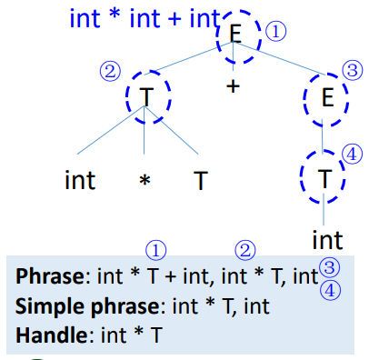
句柄（Handle）只出现在栈顶
它可以出现在栈外，但是最终会被移进到栈中
为什么不在栈中，这意味着本应该被归约但是没有
活前缀（Viable Prefix）
定义：一个可行前缀是一个最右前缀的前缀，并且它没有越过最右句柄的右端
S => bBa => bbAa，这里句柄是 bA，因此可行前缀包括 bA 的所有前缀（包括 b, bb, bbA），但不能是 bbAa（因为越过了句柄）
二义文法（Ambiguous Grammar）
存在多个正确的行动，表格会矛盾
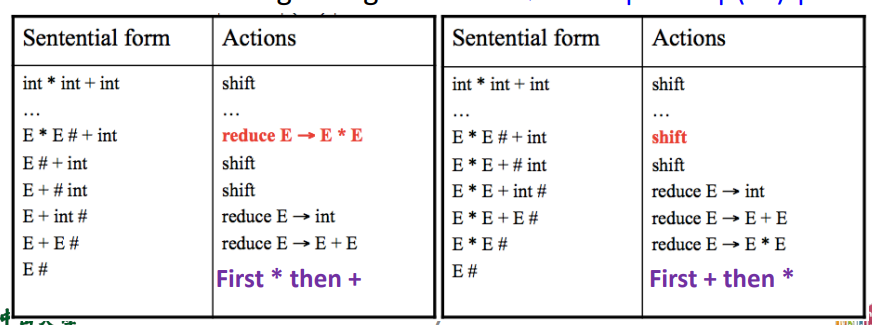
指定优先级和结合性
删去二义性
也可能因为往前看的数量限制产生歧义，但是很少
Bottom-up 的属性
句柄总在栈顶
无句柄移入，有句柄归约
冲突可能发生（移入-归约冲突，归约-归约冲突）
Bottom-up 类型
简单优先
运算符优先
递归提升
LR类
LR（k）Parser
L 扫描输入从左往右
R 构建最右推导的逆
k 往前看 k 个
和 LL（k）对比
时间都是线性
自动生成，更方便
更复杂，更难 debug
更强大：可以处理左递归和左公因子（\(LL(1)\subset LR(1)\)）
栈存着 state ，每个文法符号和状态相关联 栈的内容+input（\(X_1X_2...X_ma_i...a_n\)）是右句型 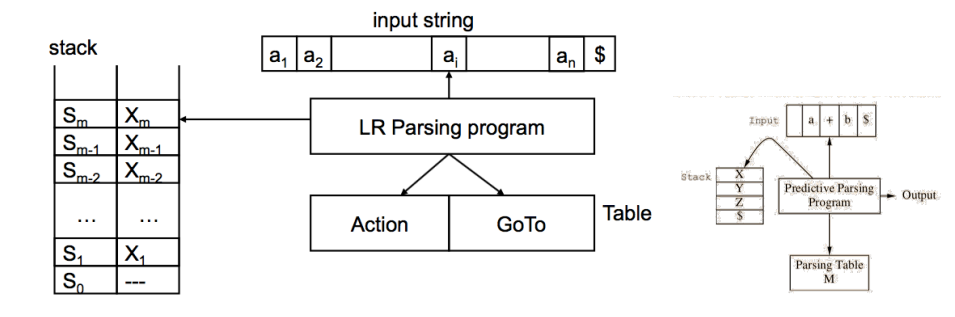
分析表
Action 表：
action[s,a]告诉分析器栈顶是 s 和输入是终结符a的时候该做什么，可能是移进，归约，接受，拒绝Goto 表：
Goto[s,X]表示栈顶 s 状态归约得到非终结符X后的在栈顶的新状态
四种操作
移进（Shift）
归约（Reduce）
接受（Accept）
错误（Error）
si：移进并且转移到状态 i
rj：使用标号为 j 的产生式来归约
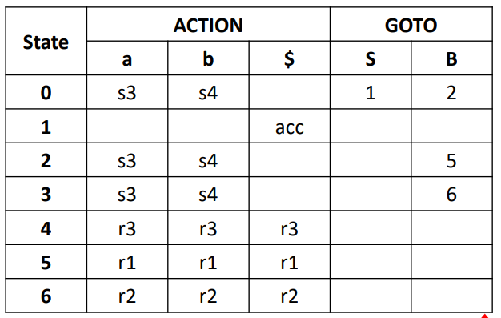
action表的使用
根据 Action[s,a]
来决定移进，还是归约。移进后的状态有提供，归约后会空缺一个新状态，需要
goto 表提供
goto表的使用
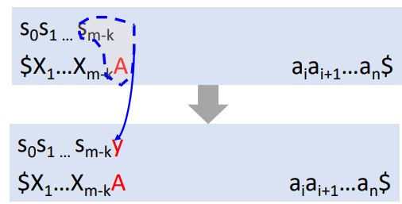
构建表
LR（0）：最简单的 LR，只考虑栈来决定移进还是归约。实用性差
SLR（0）：Simple LR，从LR(0)派生出来的 FIRST/FOLLOW 集来观测，表格和 LR（0） 一样小
LR（1）：考虑了下一个token，比LR(0)更复杂更实用
LALR（0）：lookahead LR，使用与SLR（1）相同的LR（0）自动机
LR（0） 构建表
项目 Item
项目 Item：是一条产生式的 RHS 有一个点
A-> a.bc。这个点代表已经看见了左边的移入了栈中。对于
\(X\rightarrow \varepsilon\)，它的 item
只有一个 \(X\rightarrow \cdot\) ，item
通常叫做 LR（0）item，也叫做配置（configuration）。
比如说 A-> X.YZ 代表的意义：
我们已经识别了 X
我们期待得到 YZ 推导得到的子串
假设有产生式 Y->u|w 那么可以得到 LR
解析器配置集 如下
A->X.YZY->.uY->.w
其中解析表的每个状态对应着一个配置集
增广文法（Augmented Grammar）
我们希望从一个 RHS 是一个点在S之前的 item，转移到一个RHS是它的点在 S 之后的 item 。这样 \(S\cdot\) 是完成了整个句子的移进归约。因此我们会修改一下原来的文法，新增一条产生式 \(S'\rightarrow S\)
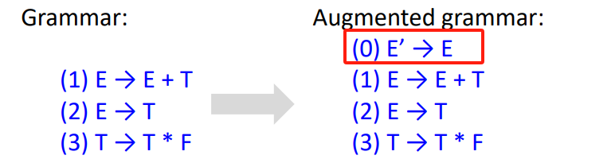
闭包计算：将等价的 item 都加入到集合里面
比如说 \(A\rightarrow \alpha \cdot B \beta\) 意味着我们希望下一个得到 \(B\beta\) 转化而来的子串作为输入。这个子串会有B产生式得到的前缀。因此，我们使用所有的 \(B\rightarrow \gamma\) ，我们会把 \(B\rightarrow \cdot \gamma\) 进入闭包
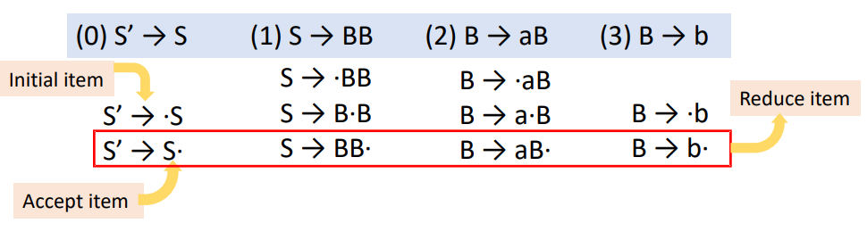
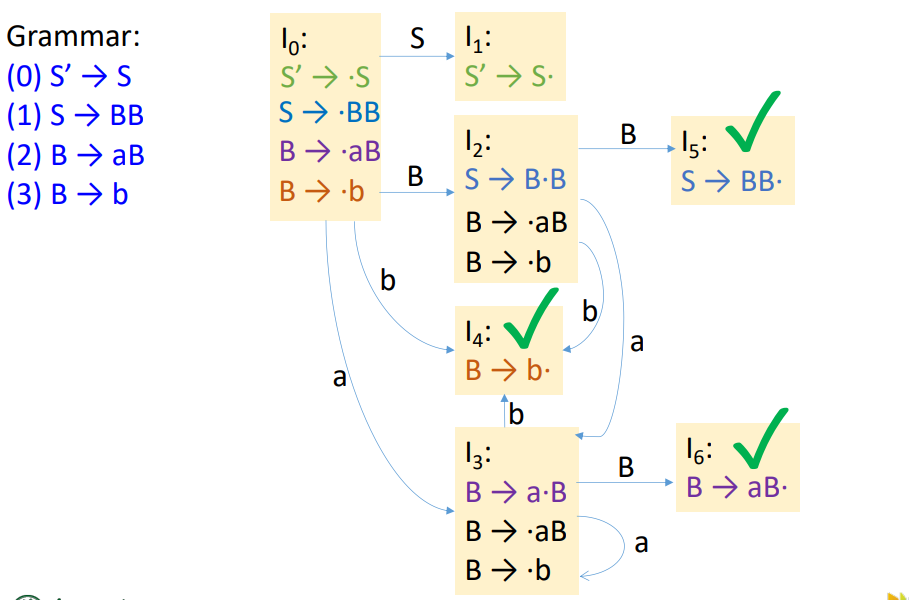
构建表
状态就是 item 的序号
点在最后的就 reduce
终结符就 shift
非终结符就 goto 表的新状态
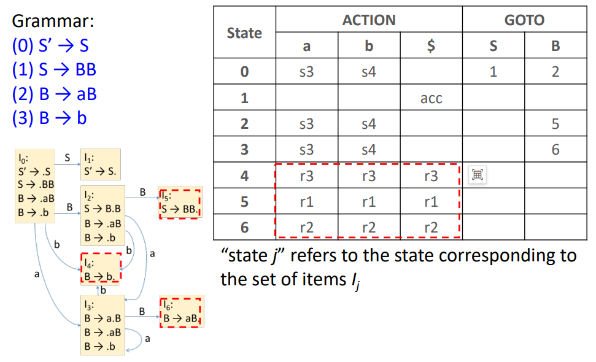
闭包（closure）
闭包：I 是文法的一个 item 集合，closure（I）不断应用直至无法更新：
初始化 closure（I）= I
如果 \(A\rightarrow \alpha \cdot B \beta\) 在闭包中，并且 \(B\rightarrow \gamma\) 在产生式中。那么添加 \(B\rightarrow \cdot \gamma\)
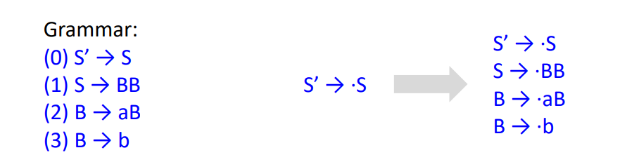
goto（）
goto(I,X) 返回的是从 item 集合 I 归约到 X 后转移得到的状态
构建 LR（0）状态
构造增广文法
定义初始状态：即创建一个状态通过对 \(S'\rightarrow \cdot S\) 进行闭包计算
添加状态：通过 goto 对每一个符号给状态得到新的状态
重复
构造 DFA
构造规范 LR（0）项集族（DFA的状态集）
所有新状态都是通过 goto(I，X) 来添加
LR（0）自动机
每次移入都代表转移到一个新状态
如果选择归约 \(E\rightarrow \alpha\)，把 \(\alpha\) 对应的状态弹出栈，把现在栈顶的状态 x 根据如果放入 E 会转移到对应的状态 y，把 y 放入栈
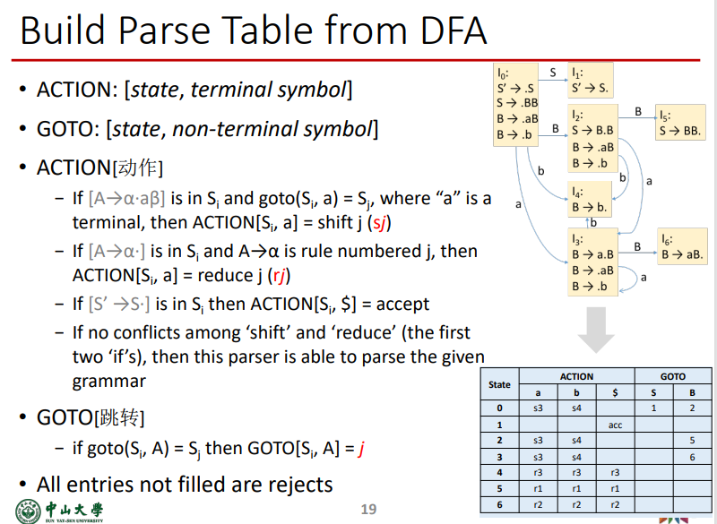
通过看栈顶的 state 直接决定了 shift/reduce ，没有任何的 lookahead ，是 LR（0）
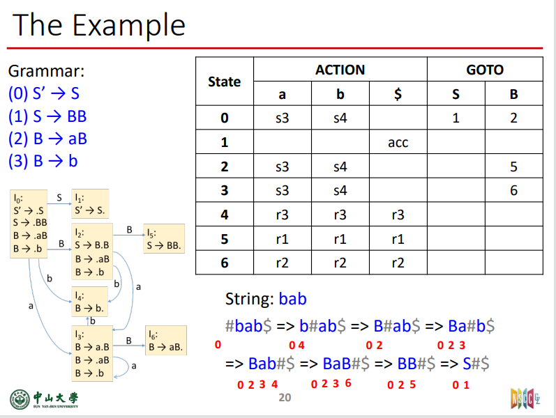
LR（0）的冲突
冲突：不知道该选择哪个？
归约-归约冲突：如果任何状态有两个 item 类似 \(X\rightarrow \beta \cdot\) ，\(Y\rightarrow \omega \cdot\)
移进-归约冲突：如果任何状态有两个 item 类似 \(X\rightarrow \beta \cdot\) ，\(Y\rightarrow \omega \cdot t \sigma\)
总结 LR（0）最简单和容易实现，没有任何展望，实际不常用
考虑展望的 LR 关系
SLR（1）：简单的 LR（1），归约用 FOLLOW
LR（1）：比 FOLLOW 更精细
LALR（1）：折衷两者
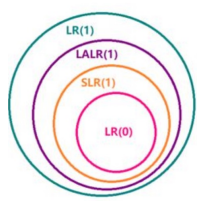
SLR simple LR
和 LR（0）表结构一致
但是动作填充不一样，只有下一个 token 出现在 FOLLOW（A） 集才会进行归约。这里的 A 指的是归约后的非终结符
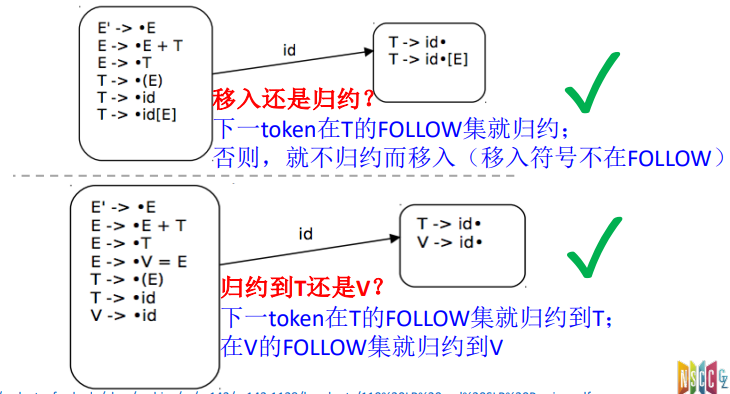
SLR（1） 文法
如果一个文法可以 SLR（1）可区分（无矛盾）即为 SLR（1） 文法。
无移入-归约冲突：对于 item \(A\rightarrow u\cdot xv\)，x是终结符，不会出现这种情况： \(B\rightarrow w\cdot\) 在集合中并且 x 在FOLLOW(B)
无归约-归约冲突：同一个集合内两个 item：一个 item \(A\rightarrow u\cdot\) 和 \(B\rightarrow v\cdot\) 中的 FOLLOW(A) 和 FOLLOW(B) 不相交
其实 SLR（1）的展望信息已经足够（已经考虑输入的下一个字符），我们需要保留多一点的历史路径信息（考虑栈信息）。
LR（1）解析
通过让 item 中包含一个终结符来添加额外信息
LR（1）常见的配置 item 如下
\(A\rightarrow X_1X_2...X_i\cdot X_{i+1}...X_j,a\)
我们已经看到了 \(X_1...X_i\) 在栈顶
期待看到 \(X_{i+1}...X_j\) 然后进行归约
但是必须跟着 \(X_j\) 的 token 要是终结符 \(a\)
其中 \(a\) 是配置的 lookahead
可以这样使用，假设已经有 \(A\rightarrow X_1..X_j \cdot,a\) 这时候已经在栈顶看到了所有，但是只有下一个 token 是 a （终结符或者 \(\$\)）的时候才会进行归约
可能会是这样的形式 \(A\rightarrow u\cdot,a/b/c\)
和其他对比何时进行归约
LR（0）：只有有完成了的 item
SLR（1）：完成同时下一个 token 出现在非终结符的 FOLLOW 集
LR（1）：完成同时下一个必须是终结符 a
LR（1）的 item ： LR（0）item + lookahead 终结符
虽然比 SLR（1）更强大，但是代价巨大。会极大增加 GOTO 和 ACTION 表的大小。
LR（1）构建
配置集构建和 SLR 相似，但是在进行闭包计算和 Goto（）不一样，因为有了 lookahead
闭包计算 对于每个 item \([ A\rightarrow u\cdot Bv,a ]\) ，对每个产生式 \(B\rightarrow w\) ，添加 \([B\rightarrow \cdot w,b]\) 如果满足以下条件
\(b\in FIRST(va)\)
\([B\rightarrow \cdot w,b]\) 之前没有在 item 集合
所以 lookahead 符号是 \(FIRST(va)\)，代表可以紧跟 B 之后，注意这里的 v 可以是空的
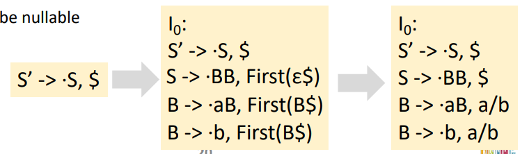
Goto（I，x） 对于 item \([A\rightarrow u\cdot Xv,a]\) ，Goto（I，x）是 \(Closure([A\rightarrow uX\cdot v,a])\)
不停重复即可构建
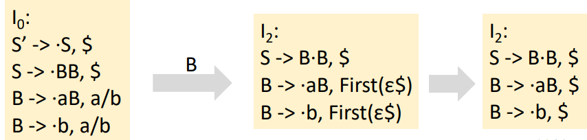
示例
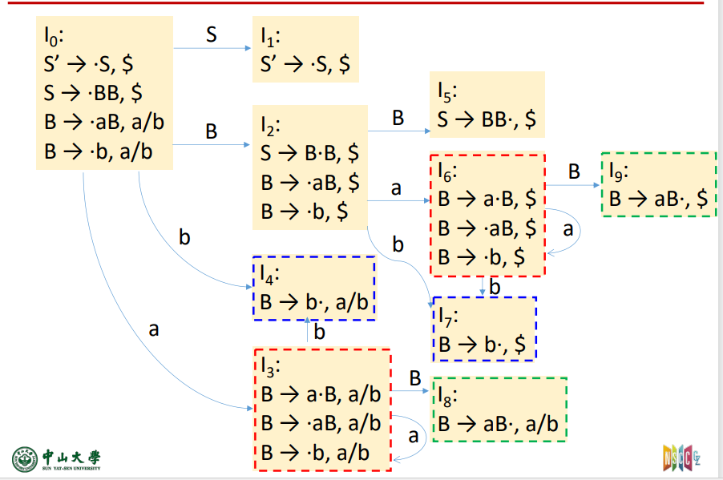
LR（1）构建表
Shift 操作和 LR（0），SLR（1）一样，不关注 lookahead 符号
Reduce 操作只有当下一个输入匹配 lookahead 才会归约
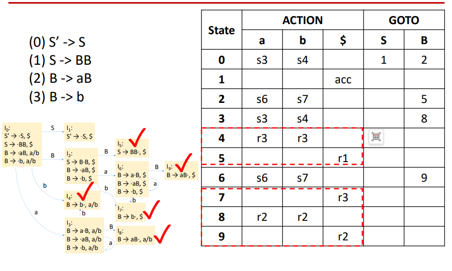
LR（1）文法
首先每个 SLR（1）文法一定是 LR（1）文法，LR（1）解析器的状态可能比 SLR（1）更多
LR（1）文法必须满足的两个条件
对于某个集合中的某个 Item \([A\rightarrow u\cdot xv,a]\) ，其中 x 是终结符。没有这样的 item \([B\rightarrow v\cdot,x]\) 在集合内（即没有移入-归约冲突）
同一个 Item 集合内没有这样的两个 item，\([A\rightarrow u\cdot,a]\) 和 \([B\rightarrow v\cdot,a]\) ，即没有归约-归约冲突
LALR（1）
LR（1）更精细，把LR（0）的每一个状态都根据 lookahead 的不同可以分成不同的状态，理论上可能导致状态数目的指数增长。LALR（1）是 SLR（1）和 LR（1）的折中。
通过合并状态减少状态，但是一样比 SLR 用 FOLLOW 集更精细
核心相同，仅展望不同
比如 LR（1）如下
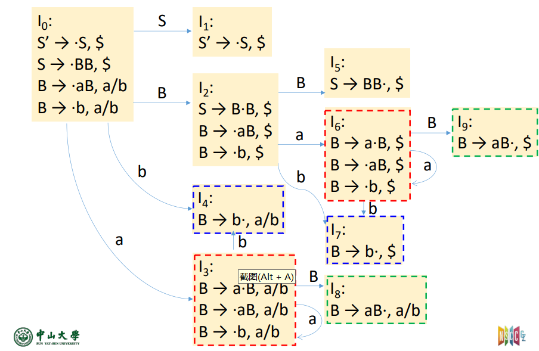
对于核心相同的 LR（1）状态合并，它们本来仅有 lookahead 不一样
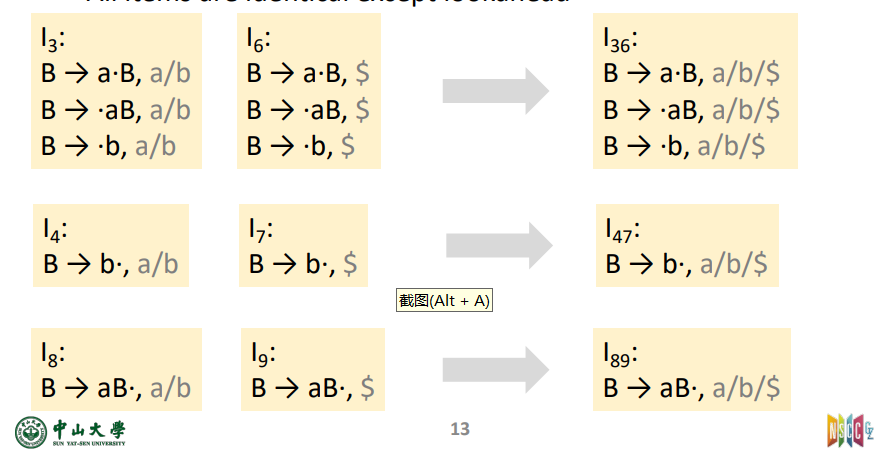
表构建如下
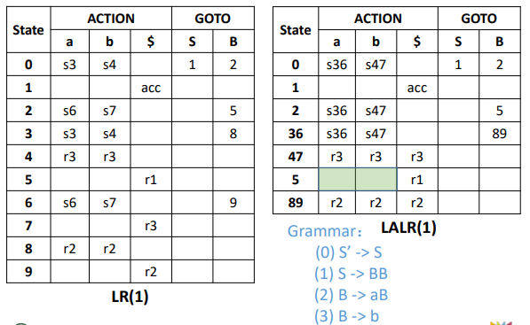
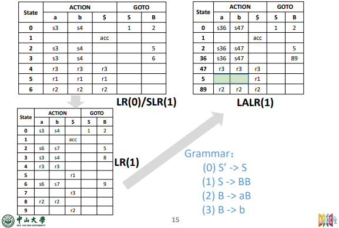
LALR（1）表合并的效果
会引进归约-归约冲突，但是不会引进移进-归约冲突
可能会推迟错误的识别。对于 shift，可能进行更多归约来识别错误。
LALR（1）解析表构建
和 LR（1）同样的方法构建 Item 集，但是可以合并一些
LALR（1）和 SLR（1）/LR（0）同样数目的状态，但是归约数量却更少
构建的两种方式
暴力：先构建 LR（1），再合并
高效：构建 LR（1）的同时合并
总结来说
文法范围：LR > LALR > SLR
状态数目：LR > LALR = SLR
对比 LL 和 LR 解析
LL（k）解析器，依赖 LHS 和 RHS 的一点展望，选择依据是 LHS+RHS 的 k 个符号
LR（k）解析器，依赖整个 RHS（都看见了），可以解决左递归和左公共前缀。选择依据是 整个 RHS + LHS 后 k 个符号
文法层级大概如下
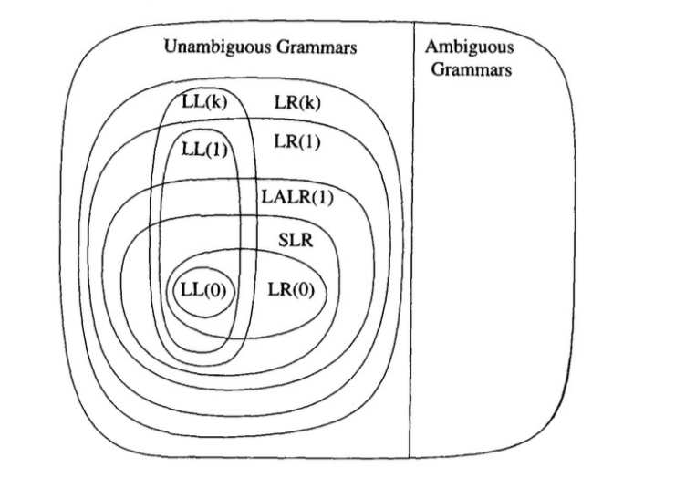